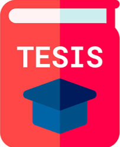

Tu navegador no soporta el elemento de audio.
🎵 Play Música
UNIVERSIDAD NACIONAL MAYOR DE SAN MARCOS
UNIVERSIDAD NACIONAL MAYOR DE SAN MARCOS
UNIVERSIDAD NACIONAL MAYOR DE SAN MARCOS
UNIVERSIDAD NACIONAL MAYOR DE SAN MARCOS
UNIVERSIDAD NACIONAL MAYOR DE SAN MARCOS
UNIVERSIDAD NACIONAL MAYOR DE SAN MARCOS
Introduction
Books
Paper
WebLink
Thesis
Doc-UPG
Statistical

Diseño y Procesado de Aleaciones de Titanio mediante Técnicas Pulvimetalúrgicas Avanzadas
Metalogénesis de los Depósitos de Cobre-Hierro y otros elementos Metálicos asociados en Anfibolitas de las fajas Central y Oriental del Centro Sur de las Sierras de Cordoba
PhD Thesis_Forecasting unrest & eruption at Calderas, Southern Italy_ A. Steele 2018
Application of Artificial Neural Network Systems to Grade Estimation from Exploration Data
Enfoque Predictivo para la Optimización del tamaño de Fragmentación en base a Técnicas de Perforación y Voladura de Rocas
Análisis Experimental de la Fragmentación, Vibraciones y Movimiento de la Roca en Voladuras a Cielo Abierto
The Development of Short Bowl Ultracentrifuges